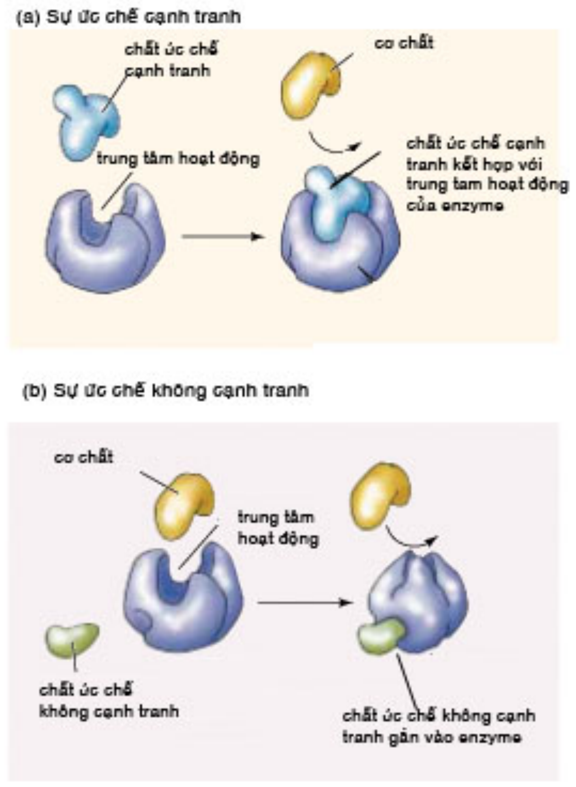

Đọc động học enzyme và điều hòa chuyển hóa
VN04 · Trao đổi chất và năng lượng · 4 trắc nghiệm và 1 tự luận
Bắt đầu học ↓Học trọn chương và làm bộ 80 trắc nghiệm, 15 tự luận
Sau buổi này
- Tách tốc độ phản ứng khỏi cân bằng năng lượng.
- Giải thích đặc hiệu, cofactor, ảnh hưởng pH/nhiệt độ và điều hòa bằng số đo.
- Nhận diện dấu vết của ức chế cạnh tranh và phản hồi âm.
Gợi nhớ
Nếu tăng cơ chất mãi nhưng tốc độ ngừng tăng rõ, bạn sẽ nghĩ số lượng enzyme hạn chế hay ΔG đã đổi?
Học kiến thức qua hình
Quan sát hình minh họa

Hai hình đặt cạnh nhau để đối chiếu vị trí chất ức chế và đường gắn của cơ chất.
Quan sát · Trong hai panel, tìm vị trí gắn của cơ chất và chất ức chế. Ở hình nào chúng cùng tranh vị trí hoạt động?
Dự đoán · Nếu tăng cơ chất rất nhiều làm tốc độ gần trở về đối chứng, kiểu nào trong hình phù hợp hơn với kết quả?
Mở giải thích sau khi dự đoán
Dữ kiện đó phù hợp với mô hình cạnh tranh, nơi cơ chất có thể chiếm lại vị trí gắn. Sơ đồ giúp diễn giải kết quả, còn vị trí gắn cụ thể vẫn cần kiểm tra bằng một phép đo riêng.
| Cơ chất | Đối chứng | Có X | Có Y |
|---|---|---|---|
| Thấp | 25 | 8 | 12 |
| Trung bình | 72 | 39 | 36 |
| Rất cao | 100 | 99 | 51 |
Số liệu tùy ý, ba cột đo cùng lượng enzyme.
Đọc hình để tự rút ra cơ chế
Quan sát · Ở cơ chất rất cao, X gần bắt kịp đối chứng nhưng Y vẫn thấp.
Dự đoán · Nhánh nào phù hợp hơn với ức chế cạnh tranh thuận nghịch?
Mở giải thích sau khi dự đoán
X phù hợp hơn với kiểu cạnh tranh trong mô hình đơn giản. Cần thêm kiểm tra để khẳng định cách gắn cụ thể.
Hoạt tính và tính đặc hiệu
Cơ chất gắn tại trung tâm hoạt động; đặc hiệu phụ thuộc cấu trúc và tương tác. Một số enzyme cần cofactor, như ion kim loại hoặc coenzyme hữu cơ. Tăng nồng độ enzyme có thể tăng tốc độ khi lượng cơ chất phù hợp.
Điều kiện phản ứng và chất ức chế
pH ảnh hưởng trạng thái ion hóa; nhiệt độ ảnh hưởng tốc độ và độ bền cấu trúc. Chất ức chế cạnh tranh thuận nghịch có thể tranh vị trí gắn với cơ chất; ở mô hình enzyme đơn giản, tăng cơ chất có thể giảm tác động và vẫn đạt cùng Vmax. Trong mô hình ức chế không cạnh tranh thuần, Vmax giảm dù tăng cơ chất. Ức chế không thuận nghịch làm mất hoạt tính của phần enzyme bị tác động. Một vài điểm đo chưa tách chắc các mô hình.
Điều hòa dòng
Dị hóa tạo chất trung gian, chất mang electron và năng lượng; đồng hóa dùng những nguồn đó để xây chất. Phản hồi âm có thể dùng sản phẩm cuối của một nhánh kìm enzyme ở trước, giảm tích lũy khi nhu cầu thấp.
Nguồn ATP
Phosphoryl hóa mức cơ chất là chuyển nhóm phosphate trực tiếp từ chất hữu cơ sang ADP. Hóa thẩm dùng gradient H⁺ qua ATP synthase. Hô hấp và quang hợp đều có cơ chế tạo gradient, với nguồn năng lượng khác nhau.
Liên hệ thực tế
Một tuyến sản xuất dùng enzyme có thể theo tốc độ ban đầu trong khi thay cơ chất, pH hoặc nhiệt độ từng yếu tố. So sánh các điều kiện cần giữ cố định các yếu tố còn lại.
Cụm bài tập
Động học và dòng của một nhánh
Bảng minh họa tốc độ ban đầu theo nồng độ cơ chất. X và Y là chất can thiệp chưa biết cơ chế. Trong một nhánh khác của cùng mô hình, sản phẩm cuối P tăng làm enzyme đầu tuyến giảm hoạt tính.
| Mức cơ chất | Đối chứng | X | Y |
|---|---|---|---|
| Thấp | 25 | 8 | 12 |
| Trung bình | 72 | 39 | 36 |
| Rất cao | 100 | 99 | 51 |
Đối chiếu bài làm
Chọn một chỗ còn phân vân. Giải thích lại bằng lời của mình rồi thử một câu cùng dạng.